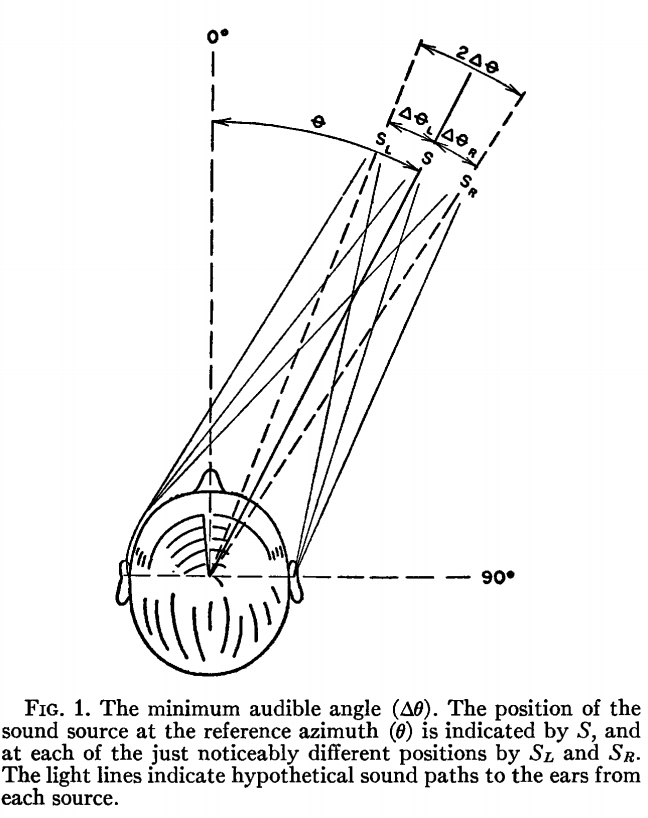

On the Minimum Audible Angle
Author: A. W. Mills
Date: April, 1958
The Minimum Audible Angle (MAA)
...the "minimum audible angle," which is defined as the smallest detectable difference between the azimuths of two identical sources of sound...The minimum audible angle is the angle formed at the center of the head by lines projecting to two sources of sound whose positions are just noticeably different, when they are sounded in succession.

Experiment 1
Subjects Tested: 3
Two exactly similar tuning forks ... and two resonant cavities of the same pitch as the forks, capable of reinforcing their sound, were used ... the observer being situated midway between them, at equal distances ... in response to a signal, one only was held over its resonator, so that the noise produced by the exciting of the fork could give no indication as to which side the sound came from.
| Variable | Description | Value(s) |
|---|---|---|
| Location | Location of sound source. | 0°-90° @ 15° increments, 50cm from center. |
| Sound Type | The sound types used. | Pure tones, frequency 250 Hz - 10000 Hz |
the observer had no difficulty in detecting when the fork was on his right or his left, but when he turned a quarter round, so that one was immediately in front and the other immediately behind, he was quite at a loss, and could form no opinion as to whether the sound was in front or behind him.
| Variable(s) | Result |
|---|---|
| Pure tone, left/right. | Accurate localization. |
| Pure tone, front/back. | Front-back confusion. |
Confirmation of front-back confusion. Not clear about exact locations used.
Extras
The author takes particular interest in the difference between pure tones and complex tones for localization, with the later being easier to distinguish. In the discussion section a variety of ideas are considered including the effect of head size and wavelength on sound shadowing, the pinna's effect on sound alteration, dynamic sound movement, and the purpose of the cochlea.